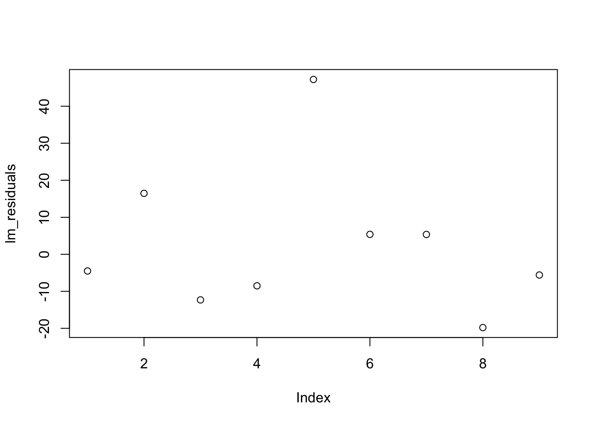

library(readr)
# Save Subset 1
write_csv(time_b4_leaving, here::here("tidytuesday-exercise", "data", "time_b4_leaving_care_state.csv"))
# Save Subset 2
write_csv(time_b4_leaving_psych, here::here("tidytuesday-exercise", "data", "time_b4_leaving_psych_care_state.csv"))
# Save Subset 3
write_csv(time_b4_discharge, here::here("tidytuesday-exercise", "data", "time_b4_discharge.csv"))tidytuesday-exercise
Getting the Data
Here is the codebook for what the different variables in the table mean:
care_state.csv
| variable | class | description |
|---|---|---|
| state | character | The two-letter code for the state (or territory, etc) where the hospital is located. |
| condition | character | The condition for which the patient was admitted. Six categories of conditions are included in the data. |
| measure_id | character | The ID of the thing being measured. Note that there are 22 unique IDs but only 21 unique names. |
| measure_name | character | The name of the thing being measured. Note that there are 22 unique IDs but only 21 unique names. |
| score | double | The score of the measure. |
| footnote | character | Footnotes that apply to this measure: 5 = “Results are not available for this reporting period.”, 25 = “State and national averages include Veterans Health Administration (VHA) hospital data.”, 26 = “State and national averages include Department of Defense (DoD) hospital data.”. |
| start_date | date | The date on which measurement began for this measure. |
| end_date | date | The date on which measurement ended for this measure. |
Questions in Mind Based on Suggestions on GitHub
Is there a connection between state populations and wait times?
Which conditions have the longest wait times? The shortest?
Exploratory Data Analysis
What was done & why:
I noticed that the measures in the measure_name column were all very different. Without creating subsets of the data, you would be comparing unlabeled scores that are not measuring the same thing. In this data set especially, this would be very adverse as some of the scores are ideally higher and some ideally are lower.
I subsetted the data as a result in measures I was curious about.
Perfect. Now I wanted to save these sets to further my EDA.
Time to take a look at this subsets but in the context of states as well.
Very smushed, let’s try again.
The state variation is glaring in whole with some states being firmly in the 100 minutes and some states being up into the 300 minute range (not good). The time before discharge graphic also showed not only large interstate differences but also large intrastate differences. For example, NM (New Mexico) had a glaringly large range. The same is true with IN, DC, ME, DE. Curious to know if these states range most highly in SES disparity or insurance coverage??
This table was helpful to print out the largest range states that we saw in the graph. But I included another iteration of this table because I saw that some missing data created negative values (-Inf). This meant that the smallest range ones in the table did not necessary show the smallest ranges in discharge time but just negative calculation.
So, next, I thought it would be neat to try it out on a map.
To do some modeling for my question on whether income inequality is directly the reason for the variablity in ranges between states, I found some Gini Index data to compare to my Time to Discharge Data.
# Load necessary libraries
library(dplyr)
library(readr)
library(stringr)
# Load Gini Index data
gini_data <- read_csv(here("tidytuesday-exercise", "data", "gini-index-data.csv"))Rows: 1 Columns: 105
── Column specification ────────────────────────────────────────────────────────
Delimiter: ","
chr (53): Label (Grouping), Alabama!!Margin of Error, Alaska!!Margin of Erro...
dbl (52): Alabama!!Estimate, Alaska!!Estimate, Arizona!!Estimate, Arkansas!!...
ℹ Use `spec()` to retrieve the full column specification for this data.
ℹ Specify the column types or set `show_col_types = FALSE` to quiet this message.colnames(gini_data) [1] "Label (Grouping)"
[2] "Alabama!!Estimate"
[3] "Alabama!!Margin of Error"
[4] "Alaska!!Estimate"
[5] "Alaska!!Margin of Error"
[6] "Arizona!!Estimate"
[7] "Arizona!!Margin of Error"
[8] "Arkansas!!Estimate"
[9] "Arkansas!!Margin of Error"
[10] "California!!Estimate"
[11] "California!!Margin of Error"
[12] "Colorado!!Estimate"
[13] "Colorado!!Margin of Error"
[14] "Connecticut!!Estimate"
[15] "Connecticut!!Margin of Error"
[16] "Delaware!!Estimate"
[17] "Delaware!!Margin of Error"
[18] "District of Columbia!!Estimate"
[19] "District of Columbia!!Margin of Error"
[20] "Florida!!Estimate"
[21] "Florida!!Margin of Error"
[22] "Georgia!!Estimate"
[23] "Georgia!!Margin of Error"
[24] "Hawaii!!Estimate"
[25] "Hawaii!!Margin of Error"
[26] "Idaho!!Estimate"
[27] "Idaho!!Margin of Error"
[28] "Illinois!!Estimate"
[29] "Illinois!!Margin of Error"
[30] "Indiana!!Estimate"
[31] "Indiana!!Margin of Error"
[32] "Iowa!!Estimate"
[33] "Iowa!!Margin of Error"
[34] "Kansas!!Estimate"
[35] "Kansas!!Margin of Error"
[36] "Kentucky!!Estimate"
[37] "Kentucky!!Margin of Error"
[38] "Louisiana!!Estimate"
[39] "Louisiana!!Margin of Error"
[40] "Maine!!Estimate"
[41] "Maine!!Margin of Error"
[42] "Maryland!!Estimate"
[43] "Maryland!!Margin of Error"
[44] "Massachusetts!!Estimate"
[45] "Massachusetts!!Margin of Error"
[46] "Michigan!!Estimate"
[47] "Michigan!!Margin of Error"
[48] "Minnesota!!Estimate"
[49] "Minnesota!!Margin of Error"
[50] "Mississippi!!Estimate"
[51] "Mississippi!!Margin of Error"
[52] "Missouri!!Estimate"
[53] "Missouri!!Margin of Error"
[54] "Montana!!Estimate"
[55] "Montana!!Margin of Error"
[56] "Nebraska!!Estimate"
[57] "Nebraska!!Margin of Error"
[58] "Nevada!!Estimate"
[59] "Nevada!!Margin of Error"
[60] "New Hampshire!!Estimate"
[61] "New Hampshire!!Margin of Error"
[62] "New Jersey!!Estimate"
[63] "New Jersey!!Margin of Error"
[64] "New Mexico!!Estimate"
[65] "New Mexico!!Margin of Error"
[66] "New York!!Estimate"
[67] "New York!!Margin of Error"
[68] "North Carolina!!Estimate"
[69] "North Carolina!!Margin of Error"
[70] "North Dakota!!Estimate"
[71] "North Dakota!!Margin of Error"
[72] "Ohio!!Estimate"
[73] "Ohio!!Margin of Error"
[74] "Oklahoma!!Estimate"
[75] "Oklahoma!!Margin of Error"
[76] "Oregon!!Estimate"
[77] "Oregon!!Margin of Error"
[78] "Pennsylvania!!Estimate"
[79] "Pennsylvania!!Margin of Error"
[80] "Rhode Island!!Estimate"
[81] "Rhode Island!!Margin of Error"
[82] "South Carolina!!Estimate"
[83] "South Carolina!!Margin of Error"
[84] "South Dakota!!Estimate"
[85] "South Dakota!!Margin of Error"
[86] "Tennessee!!Estimate"
[87] "Tennessee!!Margin of Error"
[88] "Texas!!Estimate"
[89] "Texas!!Margin of Error"
[90] "Utah!!Estimate"
[91] "Utah!!Margin of Error"
[92] "Vermont!!Estimate"
[93] "Vermont!!Margin of Error"
[94] "Virginia!!Estimate"
[95] "Virginia!!Margin of Error"
[96] "Washington!!Estimate"
[97] "Washington!!Margin of Error"
[98] "West Virginia!!Estimate"
[99] "West Virginia!!Margin of Error"
[100] "Wisconsin!!Estimate"
[101] "Wisconsin!!Margin of Error"
[102] "Wyoming!!Estimate"
[103] "Wyoming!!Margin of Error"
[104] "Puerto Rico!!Estimate"
[105] "Puerto Rico!!Margin of Error" # Select only columns ending with '!!Estimate'
gini_estimates_only <- gini_data %>%
select(matches("!!Estimate$"))
#Extract the first (and only) row containing the Gini Index values
gini_values <- gini_estimates_only[1, ]
#Pivot the data to long format
gini_long <- gini_values %>%
pivot_longer(
cols = everything(),
names_to = "state",
values_to = "gini_estimate"
) %>%
mutate(
# Remove the '!!Estimate' suffix to get clean state names
state = str_remove(state, "!!Estimate$")
)
# View the resulting tidy data
print(gini_long)# A tibble: 52 × 2
state gini_estimate
<chr> <dbl>
1 Alabama 0.477
2 Alaska 0.449
3 Arizona 0.465
4 Arkansas 0.474
5 California 0.487
6 Colorado 0.458
7 Connecticut 0.495
8 Delaware 0.456
9 District of Columbia 0.516
10 Florida 0.483
# ℹ 42 more rowsSo now I have my Gini Index data where I want it with my Estimates of 2023 Gini Index as a proxy for income inequality and I want to merge it with my range data I had before for each state.
# Load necessary libraries
library(dplyr)
library(tidyr)
# Create a state reference table using built-in vectors
state_reference <- data.frame(
state_name = state.name,
state_abbr = state.abb,
stringsAsFactors = FALSE
)
# Print the state reference table to confirm it exists
head(state_reference) state_name state_abbr
1 Alabama AL
2 Alaska AK
3 Arizona AZ
4 Arkansas AR
5 California CA
6 Colorado CO# Join the state reference to gini_long to add state abbreviations
gini_data <- gini_long %>%
left_join(state_reference, by = c("state" = "state_name"))
# Check the resulting gini_data with the state abbreviation added
head(gini_data)# A tibble: 6 × 3
state gini_estimate state_abbr
<chr> <dbl> <chr>
1 Alabama 0.477 AL
2 Alaska 0.449 AK
3 Arizona 0.465 AZ
4 Arkansas 0.474 AR
5 California 0.487 CA
6 Colorado 0.458 CO Merging the range (difference between the minimum and maximum time to discharge) data and the Gini coefficent data.
To quickly check whether there’s a correlation between range (the intrastate difference between the highest and lowest times before discharge - the outcome) and Gini_Estimate (predictor), here is a scatterplot with a trend line.
ggplot(combined_data, aes(x = gini_estimate, y = range)) +
geom_point() +
geom_smooth(method = "lm", se = TRUE, color = "blue") +
labs(
title = "Relationship between Gini Estimate and Range",
x = "Gini Estimate",
y = "Range (Time Before Discharge)"
) +
theme_minimal()`geom_smooth()` using formula = 'y ~ x'Warning: Removed 1 row containing non-finite outside the scale range
(`stat_smooth()`).Warning: Removed 1 row containing missing values or values outside the scale range
(`geom_point()`).Hypothesis: “States with higher Gini coefficients (indicating more economic inequality) will have longer average times before discharge in hospitals due to economic barriers affecting healthcare access.”
Assuming that range is my “outcome” and that Gini coefficents act as a predictor.
Setting up some models
Null model
Linear regression model
Random forest model
Null Model
Linear Regression Model
Random Forest
#For cross validation and workflow set up
set.seed(234)
cv_folds <- vfold_cv(train_data, v = 5)
null_workflow <- workflow() %>%
add_model(null_model) %>%
add_recipe(range_recipe)
lm_workflow <- workflow() %>%
add_model(lm_model) %>%
add_recipe(range_recipe)
rf_workflow <- workflow() %>%
add_model(rf_model) %>%
add_recipe(range_recipe)
null_res <- fit_resamples(null_workflow, resamples = cv_folds)→ A | warning: A correlation computation is required, but `estimate` is constant and has 0
standard deviation, resulting in a divide by 0 error. `NA` will be returned.There were issues with some computations A: x1There were issues with some computations A: x5lm_res <- fit_resamples(lm_workflow, resamples = cv_folds)
rf_res <- fit_resamples(rf_workflow, resamples = cv_folds)
collect_metrics(null_res)# A tibble: 2 × 6
.metric .estimator mean n std_err .config
<chr> <chr> <dbl> <int> <dbl> <chr>
1 rmse standard 22.1 5 6.45 Preprocessor1_Model1
2 rsq standard NaN 0 NA Preprocessor1_Model1collect_metrics(lm_res)# A tibble: 2 × 6
.metric .estimator mean n std_err .config
<chr> <chr> <dbl> <int> <dbl> <chr>
1 rmse standard 23.0 5 6.79 Preprocessor1_Model1
2 rsq standard 0.253 5 0.135 Preprocessor1_Model1collect_metrics(rf_res)# A tibble: 2 × 6
.metric .estimator mean n std_err .config
<chr> <chr> <dbl> <int> <dbl> <chr>
1 rmse standard 28.3 5 5.61 Preprocessor1_Model1
2 rsq standard 0.199 5 0.136 Preprocessor1_Model1print(null_res)# Resampling results
# 5-fold cross-validation
# A tibble: 5 × 4
splits id .metrics .notes
<list> <chr> <list> <list>
1 <split [27/7]> Fold1 <tibble [2 × 4]> <tibble [1 × 3]>
2 <split [27/7]> Fold2 <tibble [2 × 4]> <tibble [1 × 3]>
3 <split [27/7]> Fold3 <tibble [2 × 4]> <tibble [1 × 3]>
4 <split [27/7]> Fold4 <tibble [2 × 4]> <tibble [1 × 3]>
5 <split [28/6]> Fold5 <tibble [2 × 4]> <tibble [1 × 3]>
There were issues with some computations:
- Warning(s) x5: A correlation computation is required, but `estimate` is constant...
Run `show_notes(.Last.tune.result)` for more information.print(lm_res)# Resampling results
# 5-fold cross-validation
# A tibble: 5 × 4
splits id .metrics .notes
<list> <chr> <list> <list>
1 <split [27/7]> Fold1 <tibble [2 × 4]> <tibble [0 × 3]>
2 <split [27/7]> Fold2 <tibble [2 × 4]> <tibble [0 × 3]>
3 <split [27/7]> Fold3 <tibble [2 × 4]> <tibble [0 × 3]>
4 <split [27/7]> Fold4 <tibble [2 × 4]> <tibble [0 × 3]>
5 <split [28/6]> Fold5 <tibble [2 × 4]> <tibble [0 × 3]>print(rf_res)# Resampling results
# 5-fold cross-validation
# A tibble: 5 × 4
splits id .metrics .notes
<list> <chr> <list> <list>
1 <split [27/7]> Fold1 <tibble [2 × 4]> <tibble [0 × 3]>
2 <split [27/7]> Fold2 <tibble [2 × 4]> <tibble [0 × 3]>
3 <split [27/7]> Fold3 <tibble [2 × 4]> <tibble [0 × 3]>
4 <split [27/7]> Fold4 <tibble [2 × 4]> <tibble [0 × 3]>
5 <split [28/6]> Fold5 <tibble [2 × 4]> <tibble [0 × 3]>Takeaways
RMSE (Root Mean Squared Error): Lower values indicate better model performance.
The null model has an RMSE of 22.1.
The linear mode (lm_res) has an RMSE of 23.0.
The random forest model (rf_res) has an RMSE of 28.3.
R-squared (rsq): R-squared values range from 0 to 1, with values closer to 1 indicating a better fit. In your case:
The null model has no R-squared value (NaN).
The linear model has an R-squared of 0.253, which means about 25.3% of the variance in
rangecan be explained by theGini_Estimate.The random forest model has an R-squared of 0.199, indicating that this model explains about 19.9% of the variance in
range.
Model Comparison
Null Model: This is typically a baseline model with no predictors. It’s interesting to see that your null model has the lowest RMSE (22.1), which suggests that the other models are not doing better in terms of RMSE.
Linear Model (lm_res): The linear model explains 25.3% of the variance, but its RMSE is slightly worse than the null model (23.0).
Random Forest (rf_res): The random forest has the highest RMSE (28.3) and also explains the least amount of variance (19.9%).
The Linear Model (lm_model):
The linear model (lm_model) incorporates the Gini Estimate as the sole predictor.
Performance: The RMSE of 23.0 is relatively close to the null model. However, the R² of 0.253 suggests that there is some weak relationship between Gini Estimate and time before discharge.
Reason for inclusion: This model is simple, interpretable, and provides some insight into the relationship, but there is room for improvement in terms of performance.
Evaluation on Test Data
Now that the model has been chosen, we will evaluate it on the test data (which was set aside earlier). This is the final evaluation that will provide an honest assessment of the model’s ability to generalize to new, unseen data.
# Fit the final linear model on the full training data
final_lm_fit <- lm_workflow %>%
fit(data = train_data)
# Predict on the test set
test_data_pred <- predict(final_lm_fit, new_data = test_data)$.pred
# Calculate RMSE and R-squared
test_rmse <- sqrt(mean((test_data_pred - test_data$range)^2))
test_rsq <- 1 - sum((test_data_pred - test_data$range)^2) / sum((mean(test_data$range) - test_data$range)^2)
test_rmse[1] 18.93827test_rsq[1] -0.01457361# Plot residuals
lm_residuals <- test_data$range - test_data_pred
plot(lm_residuals)
# Create a tibble for plotting
residual_df <- tibble(
predicted = test_data_pred,
residuals = lm_residuals
)
# Residual plot
residualsplot <- ggplot(residual_df, aes(x = predicted, y = residuals)) +
geom_point() +
geom_hline(yintercept = 0, linetype = "dashed", color = "red") +
labs(
title = "Residual Plot",
x = "Predicted Range",
y = "Residuals"
) +
theme_minimal()No clear pattern in the residuals which is a good sign for the model.
Source: Data Science Learning Community (2024). Tidy Tuesday: A weekly social data project. https://tidytues.day